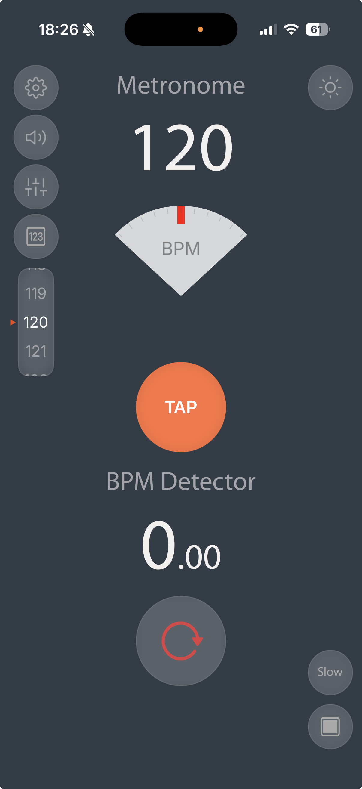
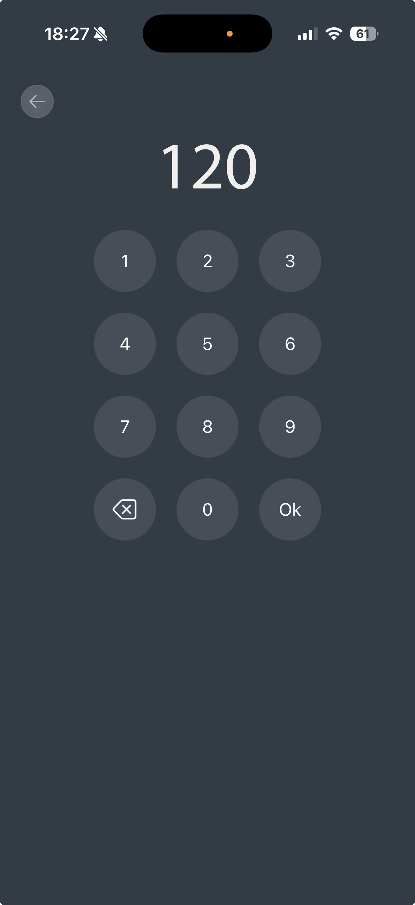
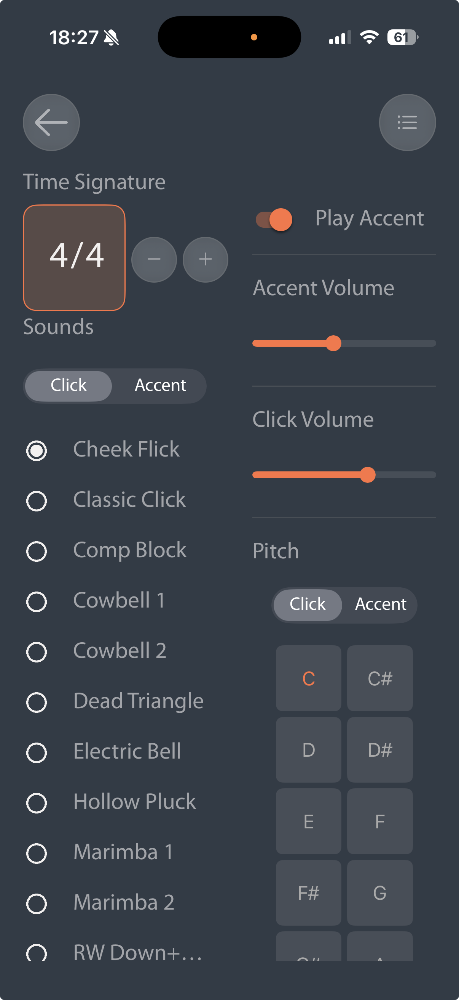
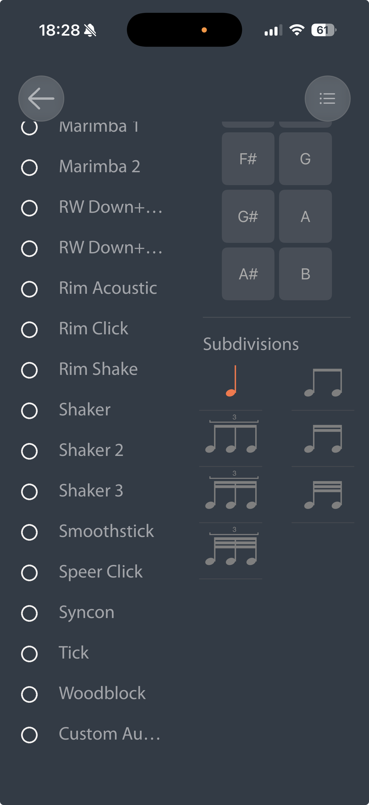
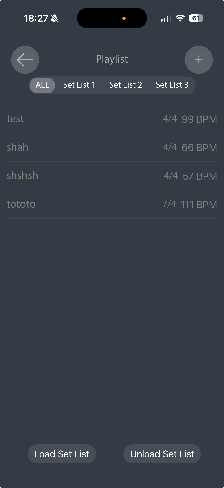
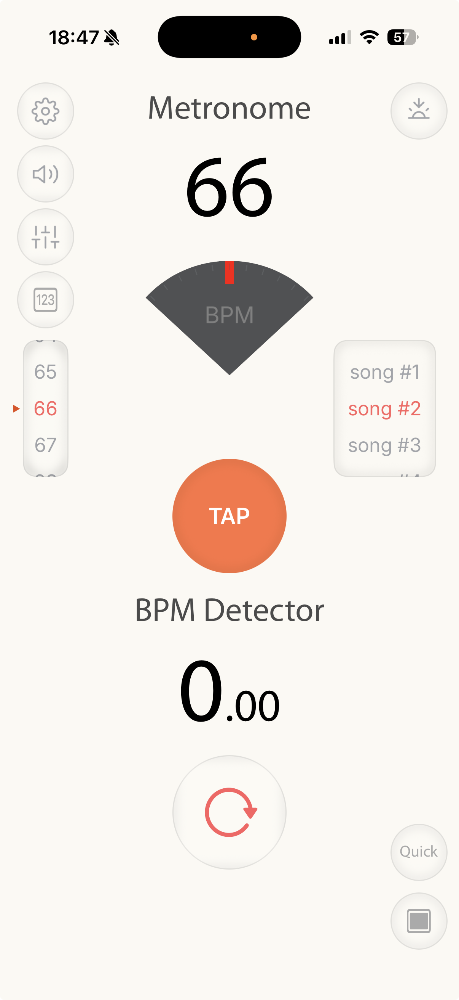

A precise metronome and a live BPM detector, side by side. Find the tempo of what you're hearing, then play along to it.

Point your iPhone at whatever is playing and the detector reads the tempo to two decimals. Or tap the beat yourself and the metronome takes the number.

Any time signature, subdivisions, accents with their own volume and pitch, and a sound list deep enough to find a click you don't hate.


Save each song with its BPM and time signature into a set list. On stage, the next tempo is one tap away — in whichever theme you can read under the lights.


LiveTempoApp is a one-time purchase for iPhone. No ads, no subscription.
Download on the App Store